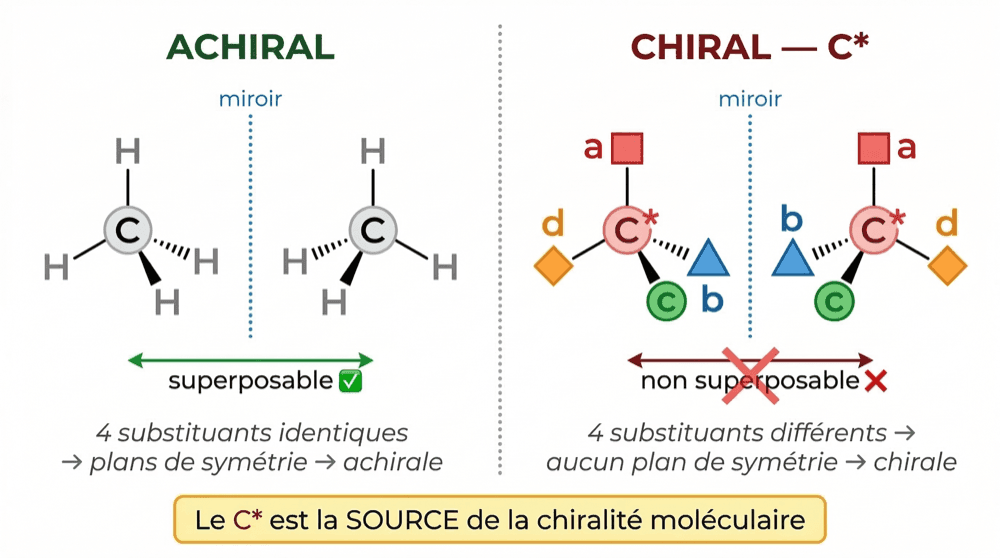
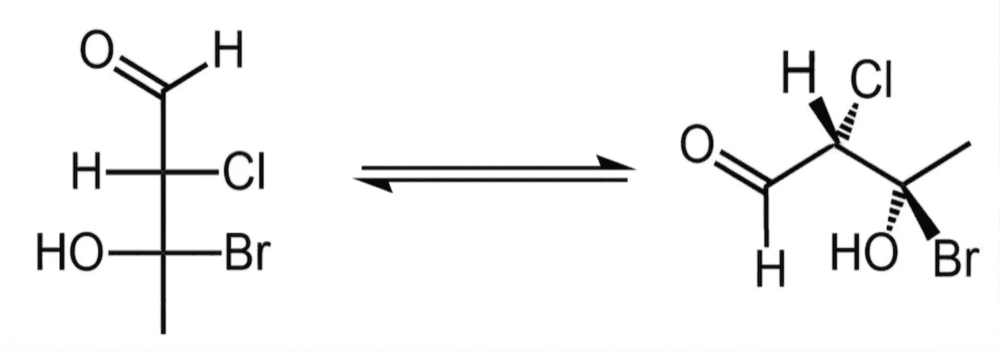
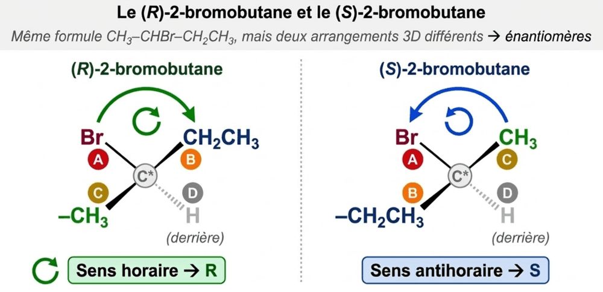

Le carbone asymétrique et la configuration R/S
4 substituants tous différents sur un carbone : c'est un C*.
R ou S ? Tout se joue sur le sens de rotation A→B→C.
Un carbone sp³ porte 4 liaisons simples. Tant que deux de ses substituants sont identiques, ce carbone garde un plan de symétrie : il ne crée aucune chiralité, et à lui seul il laisse la molécule superposable à son image miroir — elle est achirale. Mais dès que ses 4 substituants sont tous différents, plus aucun plan de symétrie n'est possible — la molécule devient chirale. Ce carbone-là a un nom : le carbone asymétrique, noté C*. Un carbone sp² ou sp, lui, ne porte que 3 ou 2 substituants : il ne peut jamais être un C*. Une fois le C* repéré, il reste à dire dans quel sens ses substituants sont arrangés dans l'espace — R ou S — en les classant par priorité CIP, puis en lisant la molécule en représentation de Cram ou en projection de Fischer.

Achiral vs chiral — 4 substituants identiques = superposable ; 4 substituants différents = C*, non superposable.

Cram vs Fischer — pointillé = derrière, gras = devant ; en Fischer, horizontal = vers toi, vertical = loin de toi.
- 1 Élimine les C qui ne sont pas sp³. Un carbone engagé dans une double ou triple liaison (sp² ou sp) n'a que 3 ou 2 substituants : la condition « 4 substituants tous différents » n'est même pas posable. Il ne peut jamais être un C*.
- 2 Compare les 4 substituants sur toute la chaîne. Pour chaque C sp³ restant, regarde ses 4 groupes attachés — pas seulement l'atome voisin immédiat. −CH₂OH et −CH₂NH₂ commencent tous les deux par −CH₂, mais l'atome suivant diffère (O contre N) : ce sont bien deux substituants différents.
- 3 Le verdict. Si les 4 substituants sont tous différents → C*. Exemple : dans le 2-bromobutane (CH₃−CHBr−CH₂−CH₃), le C2 porte H, Br, −CH₃ et −CH₂CH₃ — 4 substituants différents → C* en C2.
- 1 Classe les 4 substituants par CIP. Sur les atomes directement liés au C*, le numéro atomique le plus élevé gagne la priorité la plus haute (I > Br > Cl > S > F > O > N > C > H). En cas d'égalité, on compare l'atome suivant dans la chaîne, couche par couche, jusqu'à trouver une différence. On obtient A (le plus prioritaire) > B > C > D (le moins prioritaire).
- 2 Place D vers l'arrière. En représentation de Cram, D doit être en trait pointillé (il s'enfonce derrière la feuille). En projection de Fischer, les substituants horizontaux sont vers toi et les verticaux s'éloignent de toi — D doit donc se trouver sur un trait vertical pour lire directement.
- 3 Lis le sens A→B→C. D caché derrière, regarde dans quel sens tournent A, puis B, puis C — comme les aiguilles d'un volant. Sens horaire ↻ → R (Rectus). Sens antihoraire ↺ → S (Sinister).

Le 2-bromobutane — même formule, deux arrangements 3D opposés : Br (A) > −CH₂CH₃ (B) > −CH₃ (C) > H (D), lu horaire ou antihoraire.